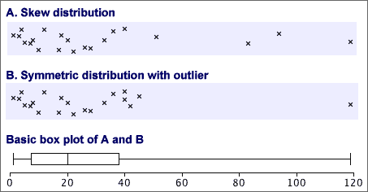
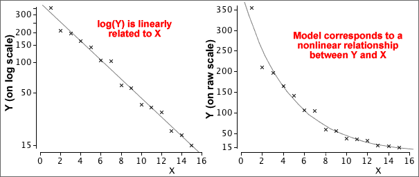
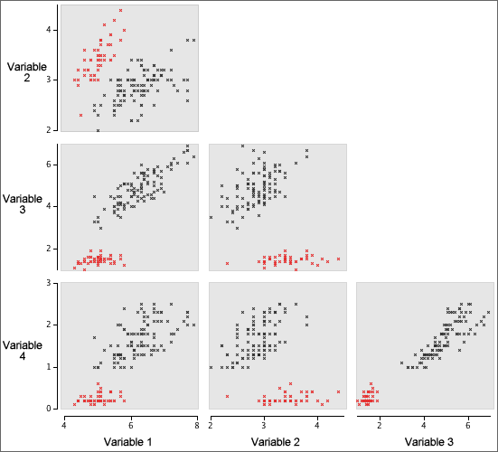
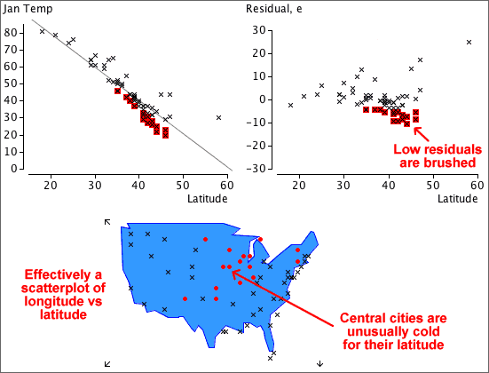

If you don't want to print now,
Need for more flexibility
Sometimes basic stem and leaf plots are not flexible enough — there would be either too many or too few rows of leaves to show the varying density well.
Repeating each stem 2 times (with leaves 0-4 on the lower copy and leaves 5-9 on the upper one) or 5 times (with leaves 0-1, 2-3, 4-5, 6-7 and 8-9 on the different copies) gives intermediate numbers of stems.
Varying histogram classes
Histograms are sometimes drawn with classes that do not all have the same width. If this is done, it is important that...
The vertical axis of a histogram with mixed class widths must not be 'frequency'.
The example below illustrates the problem:

A correct histogram for these data uses the density of cars on its vertical axis instead of the raw count — the cars per year:

Area and proportion of values
In a correctly drawn histogram, each value contributes the same area.

As a result,
The proportion of the total area above any classes equals the proportion of values in them.
For example,

Outliers and skew distributions
Basic box plots cannot show whether the minimum and maximum in a distribution are outliers or simply the end of skew distributions.

Box plots and clusters
Box plots cannot show clusters in data.

Before using a box plot, always look at the data with a dot plot or histogram to make sure that there are no clusters.
Ordering categories
If the categories have a natural ordering (an ordinal categorical variable), this ordering should be used in a bar chart.
For nominal categorical variables (no natural ordering), alphabetic ordering of the categories should be avoided. It is better to sort them in order of decreasing frequencies, giving a Pareto diagram.
Detecting 'important' categories
Pareto diagrams are particularly useful in industrial quality control and quality improvement where information is collected about the causes of problems in manufacturing processes. The Pareto principle states that:
A large percentage of instances of any problem result from a small percentage of the possible causes.
The leftmost categories in a Pareto diagram are most important. A line is usually added showing the cumulative proportions for the different causes. For the i'th category, the height of the line gives the proportion of problems from any of the i most common categories.

Linear transformations
When the values are replaced by other using an equation of the form
new value = a + b × old value
we say that there has been a linear transformation of the original values. The original and transformed data can be displayed together with dual axes.

Centre and spread
The centre and spread of the data are different, but the shape of the distribution otherwise remains unchanged. The mean and standard deviation are related:
new mean = a + b × old mean
new sd = |b| × old sd
Note that if the scale factor, b, is negative, we must change its sign since the standard deviation must always be positive.
Most other measures of centre (e.g. the median) and spread (e.g. the interquartile range) are similarly related.
Nonlinear transformations
Nonlinear transformations arise when the values are replaced by a nonlinear function of the original measurements, such as their logarithm or inverse. They have a more fundamental effect on the shape of a distribution than linear transformations.
The most commonly used nonlinear transformation is:
new value = log10 (old value)
Natural logarithms (base e) have a similar effect on the distribution of values but base-10 logarithms are easier to interpret so we use them here.
Properties of logarithms
Consider four values 1, 10, 100 and 1000. The first two values are much closer to each other than the last two values. However their logarithms are 0, 1, 2 and 3, so their logarithms are evenly spaced out.
Effect on the shape of a distribution
A logarithmic transformation selectively spreads out low values in a distribution and compresses high values. It is therefore useful before analysing skew data with a long tail towards the high values. It will spread out a dense cluster of low values and may detect clustering or outliers that would not be visible in graphical displays of the original data.

'Quantities'
Logarithmic transformation can only be used for data sets consisting of positive values — logarithms are undefined for negative or zero values. They are therefore particularly useful for quantities — i.e. amounts of something. Indeed, many researchers routinely apply logarithmic transformation to quantity data before analysis.
When are they effective?
A log transformation affects the shape of the distribution most when the ratio of the largest to the smallest value in the data is large. When this ratio is less than 10 (one order of magnitude) then the transformation has much less influence on the shape of the distribution, as in the data set below.

Power transformations
A more general family of transformations that is flexible enough to reduce or eliminate the skewness in a wide range of data sets is:

This family of power transformations includes many common ones:

Effect of power transformations
Power transformations affect the skewness of data.
If a power transformation with p > 1 is applied to data with a symmetric distribution, it will make the data skew with a long right tail. If the power transformation has p < 1, the distribution will become one with a long left tail.
In practice, power transformations are used to do the opposite. They can change many skewness distributions into fairly symmetric ones.
Correlation and nonlinear relationships
The correlation coefficient, r, is a good description of the strength of a relationship provided the crosses in a scatterplot of the data are not scattered round a curve. If the data are scattered round a curve, the relationship is called nonlinear and r may seriously underestimate its strength.

The correlation coefficient does not describe the strength of nonlinear relationships adequately.
Correlation coefficient and nonlinear relationships
The correlation coefficient, r, is a good description of the strength of linear relationship but not nonlinear ones. If a scatterplot shows marked curvature, the correlation coefficient can considerably understate the strength of the relationship.
Transform the variables to linearise the relationship
Nonlinear transformations of X and Y alters the shape of the relationship. It is often possible to linearise a relationship by transforming one or both variables.
The strength of a nonlinear relationship can therefore be described with the correlation coefficient after a transformation to one or both variables has been applied to remove the nonlinearity.


Linear model with transformed variables
If the relationship between Y and X is nonlinear, a linear model will give poor predictions and must be avoided.

However, by transforming one or both of the variables, it is often possible to linearise the relationship and therefore use least squares to fit a linear model to the transformed variables.

A logarithmic transformation of either Y or X often works, but a more general power transformation is sometimes needed to linearise the relationship.
Adding a quadratic term
An alternative solution to the problem of curvature is to extend the simple linear model with the addition of a quadratic term,
y = b0 + b1 x + b2 x2
Fitted values and residuals are defined (and interpreted) in a similar way to those for a linear model,
 = b0 + b1 xi + b1 xi2
= b0 + b1 xi + b1 xi2
ei = yi − 
As in a linear model, the quadratic model's residuals are the vertical distances between the crosses in a scatterplot and the curve. We again use least squares to estimate the unknown parameters — choose values of the three parameters to minimise the residual sum of squares,


The shape of a relationship is only known around the data
The models that we have used to describe the relationship between a response, Y, and explanatory variable, X, are usually only approximations to the 'real' relationship. For example, a scatterplot may look linear, but we really have no information about the shape of the relationship beyond our data.

A model may be useful for predicting Y from values of X that are within the range of x-values in our data, but we should be very cautious about using it to predict Y outside this range. This is called extrapolation and it can be badly in error.
Avoid using a model to predict Y far beyond the available data.
Local smoothing of scatterplots
Lowess can be used to smooth time series but was originally developed as a general way to draw a smooth curve on any type of scatterplot. Again, the smoothed value for any observation is obtained by fitting a least squares line to the observations with adjacent values for the explanatory variable. The fitted values that are obtained in this way are joined with lines.

(Most computer software implements a version of lowess that is a actually bit more complex than has been described here but our simpler version gives a good flavour of the method.)
Different plotting symbols for a third variable
The simplest way to show the relationship between three numerical variables is based on a scatterplot of two of the variables, with the third variable being represented by differing symbols instead of identical 'crosses'. Possibilities are:
Although this kind of scatterplot is easy to draw, it is usually hard to interpret. The decision about which of the three variables to represent using the plotting symbol can make interpretation easier.

3-dimensional scatterplots
The most direct way to extend a standard scatterplot of two variables, X and Y, to include a third variable, Z, is to add a third dimension to become an axis for Z. Each individual would be represented by a cross in a 3-dimensional cube.

Although a computer screen is only 2-dimensional, it can display a projection of such a 3-dimensional scatterplot. Rotating such a display with the mouse gives a good feel for the shape of the underlying 3-dimensional scatter of points. This is a dynamic display that is only effective on a computer — the information in the display is conveyed by movement. On paper, we can only present information in two dimensions.
Three-dimensional scatterplots are an interesting (and occasionally useful) way to display data. They are however much overrated as an analysis technique and simpler displays are usually more effective for extracting information from multivariate data.
Scatterplots of all pairs of variables
The problem of displaying relationships becomes even more difficult when there are more than three variables. It is possible to gain some insight into their relationships with an array of scatterplots of all pairs of variables, called a scatterplot matrix.
Brushing
Although a static scatterplot matrix reveals some aspects of the relationships between the variables, more insight into the data is obtained by adding dynamic features.
On a computer display, the scatterplots can be dynamically linked, so that clicking on a cross on one scatterplot highlights that individual in all scatterplots. Brushing extends this to allow highlighting of multiple crosses on a scatterplot with a 'brush' tool.

More about brushing
Brushing can be used on any linked displays of the same data set.

Slicing a scatterplot using a third variable
Slicing is a dynamic technique that only displays a subset of the individuals, based on a restricted range of values for one particular variable. For example, we might display a scatterplot of Y against X, but only for individuals whose values of Z are between 20 and 30. The subset can be dynamically changed with a slider or other control to show whether the relationship between X and Y is different for individuals with low Z and high Z.
Trellis plot
Slicing is a dynamic method and must therefore be performed on a computer. Although less effective, an alternative is to show a series of static plots for different slices of the data. This is called a trellis plot.